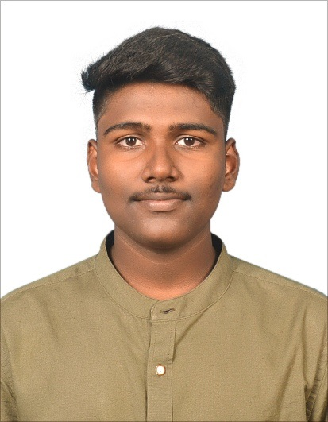

I am an Electronics and Communication Engineering student having a strong intrest in Embedded Systems, IoT, and Web Development. I enjoy building intelligent systems that combine hardware and software, and I am constantly exploring new technologies to develop practical solutions for real-world applications.
I am an Electronics and Communication Engineering student at St. Joseph’s Institute of Technology with a strong interest in Embedded Systems, Internet of Things (IoT), and Web Development. I enjoy building innovative solutions that combine hardware and software, including IoT devices, sensor-based automation systems, and intelligent web platforms. Through my academic projects and practical experience, I have developed systems such as a smart water management system, an automated drug dispenser, and a machine-learning-based recipe recommendation platform. These projects have strengthened my skills in microcontrollers, sensors, embedded programming, and software development. I am passionate about solving real-world problems using technology and continuously learning new tools and technologies to expand my technical expertise.
Developed a machine learning based platform that recommends recipes based on ingredients available to the user.
Ingredient-based recipe recommendations
ML prediction model
Web interface using Flask
Designed an IoT based irrigation monitoring system that collects real-time environmental data using sensors and helps optimize water usage for agricultural applications.
• Real-time monitoring using sensors
• Automated irrigation control
• Efficient water usage optimization
• Microcontroller based system design
Built an embedded system that automatically dispenses medicines at scheduled intervals and sends reminders to ensure patients take their medication on time.
• Automated medication scheduling
• GSM based reminder notifications
• Reliable microcontroller control
• Designed to reduce missed doses
Developing a coding platform website using React.js and reusable components while ensuring responsive design and improved user experience.
Worked on marine sensor systems and underwater communication devices related to the Matsya 6000 submersible project.
Chennai, India